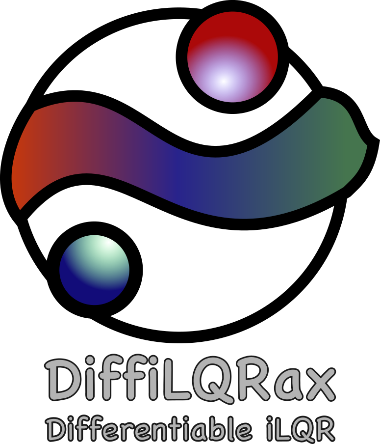
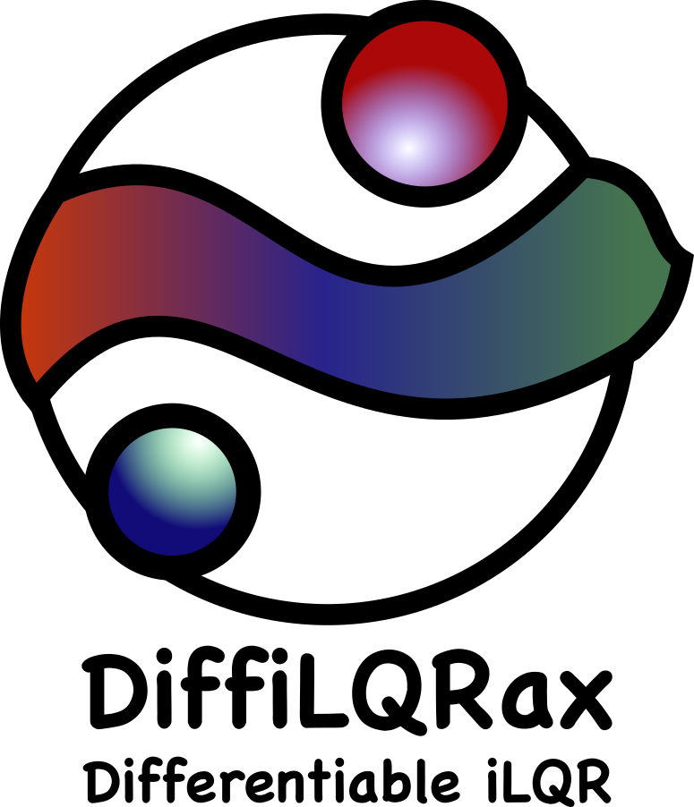
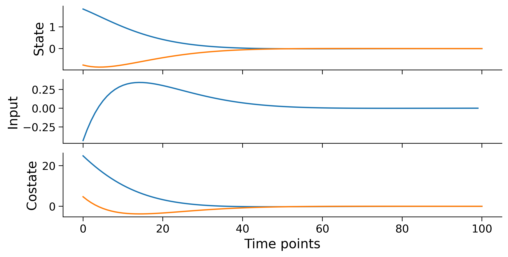
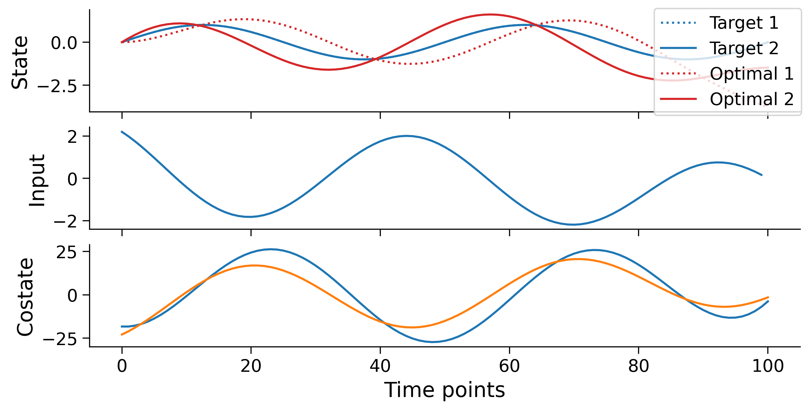
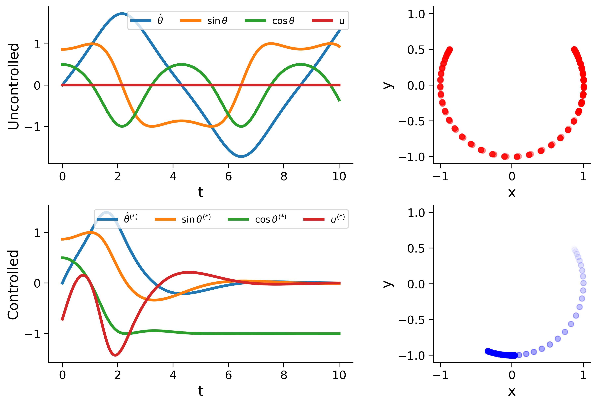
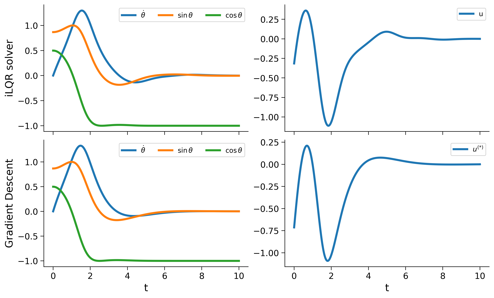
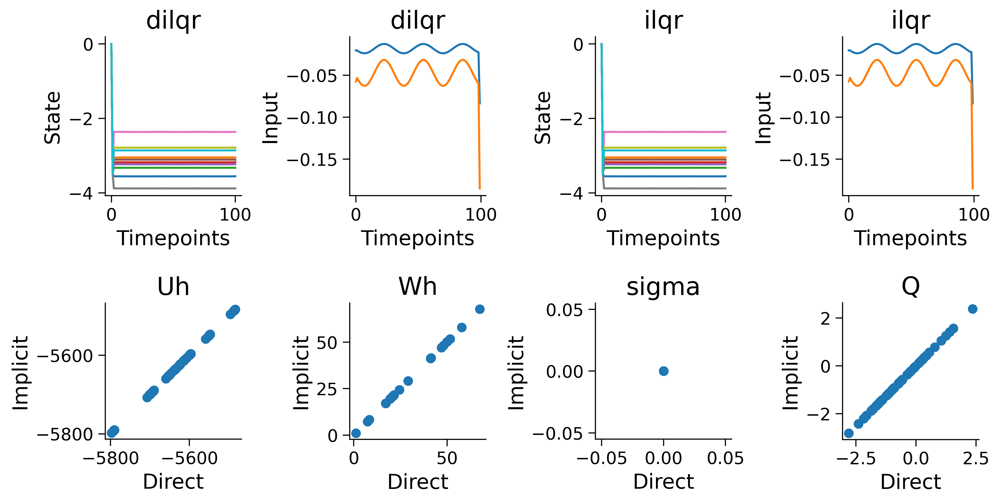

{kind=link}

{kind=link}

Welcome to DiffiLQRax!#
DiffiLQRax is an open source Python package that provides a differentiable implementation of the iterative Linear Quadratic Regulator (iLQR) algorithm using the JAX library.
Please support the development of DiffiLQRax by starring and/or watching the project on Github!
Quick Examples#
LQR Examples#
LQR optimal control of integrator dynamics

LQR tracking optimal control of integrator dynamics

iLQR Examples#
iLQR solver for simple pendulum

iLQR Optimal Control compared with Gradient Descent

iLQR solver Implicit vs. Direct gradients

Installation#
To get started with this code, clone the repository and install the required dependencies. Then, you can run the main script to see the iLQR in action.
git clone git@github.com:ThomasMullen/diffilqrax.git
cd diffilqrax
python -m build
pip install -e .
or, you can import from pip install
pip install diffilqrax
Contents#
Acknowledgements#
This project has received funding from the European Union’s Horizon 2020 research and innovation programme under the Marie Skłodowska-Curie grant agreement #813457.